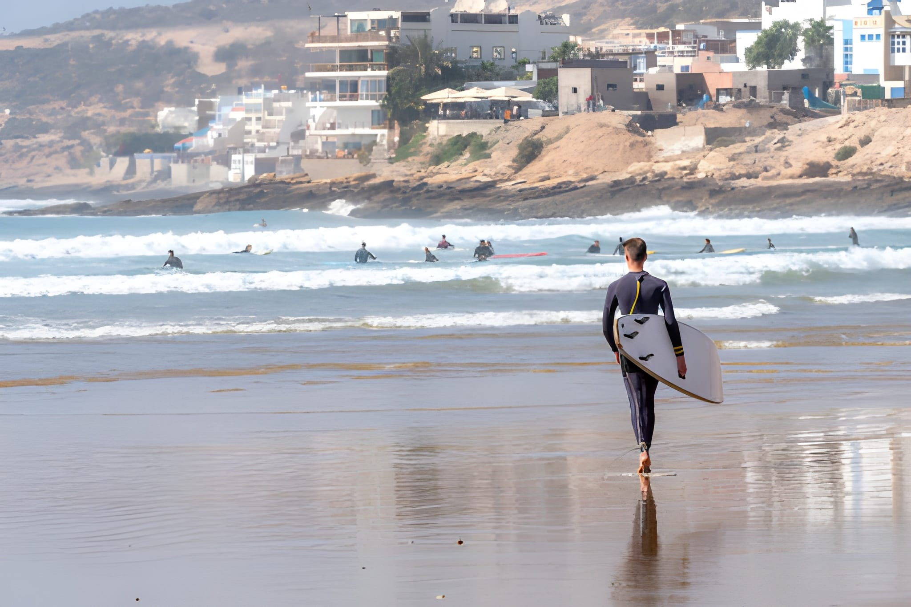

Things to do in Agadir are easier to choose when you stop treating the city like a checklist. I run small-group tours here, and most visitors are happiest with one slow coastal day, one nature or adventure block, and one experience that feels clearly Moroccan without eating the whole trip. This guide is my practical answer to what to do in Agadir, with distances in kilometres, prices in euros, and the quickest route to deeper planning: start with our day trips from Agadir hub, open the Paradise Valley Agadir guide for the biggest nature outing, and use the shortlist below for the ten best activities.
Book tours from this guide
Browse the full Agadir tours and excursions catalog, or jump to our Paradise Valley day trip from Agadir and half-day quad biking from Agadir.
Who this Agadir guide is for
This list is for travelers who already know they are coming to Agadir and want honest pacing: beach time, one strong nature or desert-style day, and maybe one Moroccan “signature” experience without turning the week into a coach tour. I wrote it for couples, small families, first-time Morocco visitors, and cruise passengers who need realistic driving times. If that sounds like you, use the quick picks next, then match activities to our bookable tours from Agadir when you are ready to reserve.
Things to do in Agadir: quick picks by trip style
I group plans by how people move, not by Instagram trends. First-time visitors usually want the bay, the Kasbah viewpoint, and one half-day or full-day trip into the hills; Paradise Valley fits that middle block well because the drive is only about 30 km from central Agadir but the temperature can be 4°C to 6°C cooler once you sit in the shade by the pools. Families with young kids often prefer a short camel ride and long beach hours instead of a 12-hour inland day, while couples regularly pick a sunset camel slot at €40 or a hammam at €45 because both are easy to time around dinner. If you are on a cruise call, read the Agadir cruise excursions guide before you lock anything that needs a long return drive. Active travelers tend to pair quad biking at €40 for two hours with a half day in Taghazout, about 20 km north, where surf lessons run €45 for two hours.
- First-time visitors: Beach, Kasbah, and our Paradise Valley Agadir guide for route detail.
- Families: Shorter activities plus the things to do in Agadir for families guide.
- Couples: Sunset camel at €40, hammam at €45, light evenings on the Corniche.
- Cruise passengers: Port timing first — see cruise excursions.
1. Paradise Valley: pools about 30 km from Agadir
Paradise Valley is a palm-lined gorge northeast of the city where locals swim in natural pools when the river flow allows. From central Agadir the road distance is roughly 30 km, but the last climbs are narrow, so budget about an hour in a vehicle depending on stops. Summer afternoons can pass 35°C in the Souss plain while the water still feels cool; in winter I pack a dry layer because air in the gorge can sit around 16°C to 22°C when Agadir bay is warmer in the sun. Our licensed Paradise Valley outing is €30 for about 5 to 6 hours with free pickup from Agadir, Taghazout, Tamraght, and Aourir, and I keep groups to a maximum of eight people so we are not crowding one pool.

Book Paradise Valley with pickup
€30, 5–6 hours, free hotel pickup in Agadir and the Taghazout coast, free cancellation up to 24 hours before. View tour details or book on WhatsApp.
Footing on the rocks is slick, so water shoes help even if you are a confident swimmer. If you want step-by-step logistics, read the full Paradise Valley guide before you decide between self-drive and a guided run.
2. Agadir beach: about 10 km of bay and the Corniche
The main beach is a long curve of sand along the bay, roughly 10 km end to end depending on where you measure from the port to the southern clubs. In midsummer, many afternoons land near 26°C to 30°C with wind, which is why kiteschools sit at the southern end; in January you still often see 18°C to 22°C air at midday, while Atlantic surface water commonly sits near 16°C to 19°C, so short swims are normal but not everyone stays in long. The paved Corniche behind the sand is practical for walking between cafés, and you can rent sun beds at clubs or use free public strips. Jet ski with us is €60 for 30 minutes if you want a structured slot instead of haggling on the sand, and a half-day boat trip is €48 for about four hours if you prefer to see the coast from the water.
Lifeguard towers appear on busier segments in season, but rips still happen after storms, so I tell guests to swim parallel to shore if they feel pulled. Evening walks are easy year-round because the city lights along the curve read clearly from the Kasbah hill.
Local Tip
Wind picks up on the southern end of the bay in the afternoon. If you want a calmer towel spot, try the central strips near the main hotels before 3 p.m., then move inland for coffee.
3. Quad biking: €40 for two hours outside the city
Quad biking here is not cinema dunes for the full two hours; it is a mix of dirt tracks, dry river beds, and short climbs where you can see the Anti-Atlas edges on a clear day. Our standard session is €40 for two hours with training at the start, helmet, and a guide in front setting pace for the group. You do not need a license, but you do need closed shoes and realistic expectations about dust in summer. We stop for tea in a village house on most runs, which adds about twenty minutes of rest and breaks up the engine noise. If you want a deeper comparison of routes, read quad biking in Agadir and the shorter Taghazout quad notes; Taghazout is only about 20 km away, so some guests add a north-coast day after a city-based quad morning.

Book quad biking if you want fixed pricing and hotel pickup rather than negotiating on the spot.
4. Sunset camel ride on the beach at €40
A sunset camel ride is a simple Agadir ritual: slow pace, ocean on one side, and light that changes fast once the sun drops toward the horizon. Our sunset camel ride with barbecue timing is €40 for about three to four hours total depending on pickup routing, which compares to the morning camel option at €30 for two to three hours if you want cooler air. Camels are tall, so I remind guests to wear trousers that clear the saddle and to listen to the handler’s mount and dismount cues. The beach segment is flat, but you still get a clear sense of the bay’s 10 km arc when you look back toward the hotels. If €40 feels steep for your budget, the morning slot is the value pick; if you care more about photos, sunset is usually warmer in tone.

Sunset camel ride details · Morning camel ride
5. Souk El Had: market scale, Monday closed
Souk El Had is a working market, not a souvenir-only zone. The complex covers roughly 13 acres with thousands of stalls, and it is closed on Monday, which catches some visitors who skim old forum posts. I shop here for fruit before mountain trips because prices are listed daily and quality is easy to check. Bargaining is normal for crafts; for food stalls I usually accept the stated weight price unless I am buying bulk. Argan oil in small bottles often runs about 80 to 150 MAD per 100 ml depending on press type; that is roughly €8 to €15 at typical exchange levels, still cheaper than airport gift shelves if the product is fresh. Leather bags range wide from about 200 MAD for simple stitching up toward 800 MAD for heavier work, so inspect seams before you pay.
| Item | Typical stall range | Practical note |
|---|---|---|
| Argan oil (100 ml) | 80–150 MAD (~€8–€15) | Smell and color should be clean, not rancid. |
| Leather tote | 200–800 MAD | Check strap rivets and zipper lanes. |
| Spices (100 g) | 10–50 MAD | Open the bag to confirm grind and aroma. |
| Hand-knotted rug | 500–5000+ MAD | Large floor pieces weigh a lot for flights. |
Keep cash in small notes, walk with awareness in crowded aisles, and treat photography of people the way you would at home: ask first.
6. Agadir Kasbah: free viewpoint near 236 m
The Kasbah sits on the hill locals call Agadir Oufella, with the plateau near 236 m above sea level, which is enough to read the whole port, marina, and beach curve in one sweep. The 1960 earthquake destroyed the old residential kasbah, so what you see now is largely rebuilt walls and the rebuilt main gate with the Arabic inscription people photograph. Entry is free, but you pay a small taxi fare up the winding road or walk if you want exercise in cooler months; summer ascents can feel hot past 32°C by midday, so I schedule this early or late. Sunset from the wall is popular because the city lights come on in a line along the bay; bring a layer if you stay after dark because the hill can run 3°C to 5°C cooler than the beach. Pair this with dinner on the Corniche so you are not rushing down in the dark on foot.
Local Tip
Taxi drivers often quote a round trip with waiting time. Agree if you want the same car for the return, or use a drop-off and call another ride when you are ready.
7. Buggy outing at €60 for three hours
Buggies add a roll cage and car-style seating compared with quads, which matters if you want a passenger beside you or a little more stability on rough stone. Our buggy adventure is €60 for about three hours with guide-led pacing similar to the quad rules: closed shoes, dust in dry weeks, and stops for tea so the trip is not only throttle time. You cover more ground than most two-hour quad loops, often pushing 25 km to 40 km of mixed track depending on conditions, but you are still inside a day that returns to Agadir for a late lunch. If your group splits between nervous and confident drivers, buggies sometimes feel less intimidating than solo quads; if you want lower cost and a shorter block, stay with the €40 quad block instead.

Buggy adventure details and booking
8. Taghazout surf: about 20 km north
Taghazout is roughly 20 km north of central Agadir, half an hour by car when traffic is light. Winter swells often peak from October through April, which is when intermediate surfers chase Anchor Point and Panorama, while beginners still find forgiving sand-bottom sections on smaller days. Summer can be flat for shortboards but fine for longboard lessons; our surf lessons are €45 for two hours with equipment included. Even without surfing, the village is a compact walk between cliff cafés and small grocery shops, and the view south toward Agadir bay is a clear line on a clear day. Combine with a Taghazout quad read if you want both sport and motors on separate half days.

Surf lessons from Agadir with pickup options
9. Essaouira day trip at €40 for about 11 hours
Essaouira is a full Atlantic day from Agadir. The highway distance is roughly 175 km each way depending on your start point, which is why our guided Essaouira day trip is priced at €40 and scheduled around 11 hours including stops; that is shorter on the clock than Marrakech but still a car-heavy day. The medina is windy compared with Agadir, often 2°C to 4°C cooler when the trade wind runs, so a light jacket helps even in summer. Fish grills near the port quote by weight; a mixed plate for two often lands near 120 to 200 MAD without drinks if you choose mid-range stalls. Wood workshops for thuya boxes cluster near the Scala, and prices rise with marquetry detail.
Compare coastal days
If you only have one long day away from the beach, Essaouira trades mountain roads for ramparts and port fish. Marrakech is €38 for about 12 hours if you prefer inland souks instead; see the Marrakech day trip page.
10. Moroccan hammam and spa at €45 for two hours
A hammam is a practical end-of-week reset after sand, salt, and sunscreen. Traditional public baths split schedules by gender; private spa versions bundle steam, black soap scrub, and sometimes a rhassoul mask. Our hammam and spa slot is €45 for about two hours in a setup aimed at visitors who want clear timing and towels included. Expect hot steam first, then an exfoliating pass with a kessa glove, then slower cool-down before any add-on massage. If you never tried a public hammam, ask about hours for women-only or men-only blocks; mixed sessions are not the norm. Pair this with a light dinner because heavy tagines right after a long steam can feel sluggish.

Planning your week: weather, pace, and tours
Agadir’s coastal climate means many winter days reach 20°C to 24°C in the sun while summer afternoons often sit 26°C to 30°C with steady breeze; spring and autumn are the easiest months if you want long walks without planning around peak heat. I still sell tours year-round because the bay is predictable, but I avoid stacking two long-drive days back to back. A sane week might be: arrival beach half day, Paradise Valley at €30, quad or buggy day, Essaouira or Marrakech long day, then hammam plus Souk before departure. Cruise guests should cross-check ship hours with the cruise guide before booking Paradise Valley or Marrakech.
We pick up free from Agadir, Taghazout, Tamraght, and Aourir, keep groups to eight travelers maximum, and allow free cancellation up to 24 hours before for standard bookings. For a wider menu beyond this top ten, open all tours or read Agadir day trips for route ideas.
Getting around
Small red petit taxis are metered inside city rules; agree a price before you start if the driver proposes a fixed fare. Inter-city taxis and rental cars work, but for mountain or desert tracks I still prefer a licensed guide who knows current road cuts.
More tours that pair well:
- Half-day boat trip — €48, about 4 hours.
- Jet ski — €60, 30 minutes.
- Sandboarding with barbecue — €60, about 4 hours.
- Horse riding — €40, 2 hours.
- Cooking class — €50, about 4 hours.
- Marrakech day trip — €38, about 12 hours.
- Agadir city tour — €25, 3–4 hours.
Frequently asked questions
How many days do you need in Agadir?
Three nights is a practical starter: one day for the beach and city, one half-day or full-day mountain trip like Paradise Valley, and one Atlantic-focused day for Taghazout surf or a longer coastal drive. If you add Marrakech, budget a fourth night because the guided round trip is about 12 hours door to door for roughly €38.
What are the best things to do in Agadir with children?
Young families usually do well with a calm beach morning, an easy activity like a morning camel ride at about €30, and a shorter outing rather than a 12-hour inland day. I keep group sizes to a maximum of 8 travelers, which is easier for kids on the road. For age-specific pacing, read our things to do in Agadir for families guide.
How much does a Paradise Valley trip from Agadir cost?
Our licensed small-group Paradise Valley excursion is €30 for about 5 to 6 hours with free hotel pickup from Agadir, Taghazout, Tamraght, and Aourir. The pools sit roughly 30 km northeast of central Agadir, so fuel and time on winding roads are the main reasons people book transport instead of self-driving.
Is Agadir beach swimmable year-round?
Many guests swim from late spring through autumn when the Atlantic near Agadir often feels roughly 17 to 22°C at the surface. In winter, some people still swim at midday, but wind chop is common and wetsuits help if you plan longer sessions. The main bay is about a 10 km arc, so you can walk to a quieter stretch if one section feels crowded.
Is Taghazout worth visiting if you do not surf?
Yes. Taghazout is only about 20 km north of central Agadir, so coffee on the cliff, a slow lunch, and photos of the point breaks still make sense without a board. If you want an intro session, surf lessons run about €45 for 2 hours with gear.
Can you do Marrakech as a day trip from Agadir?
Yes. The road is about 250 km each way and a full guided day is roughly 12 hours, priced at €38 with structured stops. It is a long day, but it works if you want a first look at the medina without moving hotels. Pair it with lighter beach days before and after.